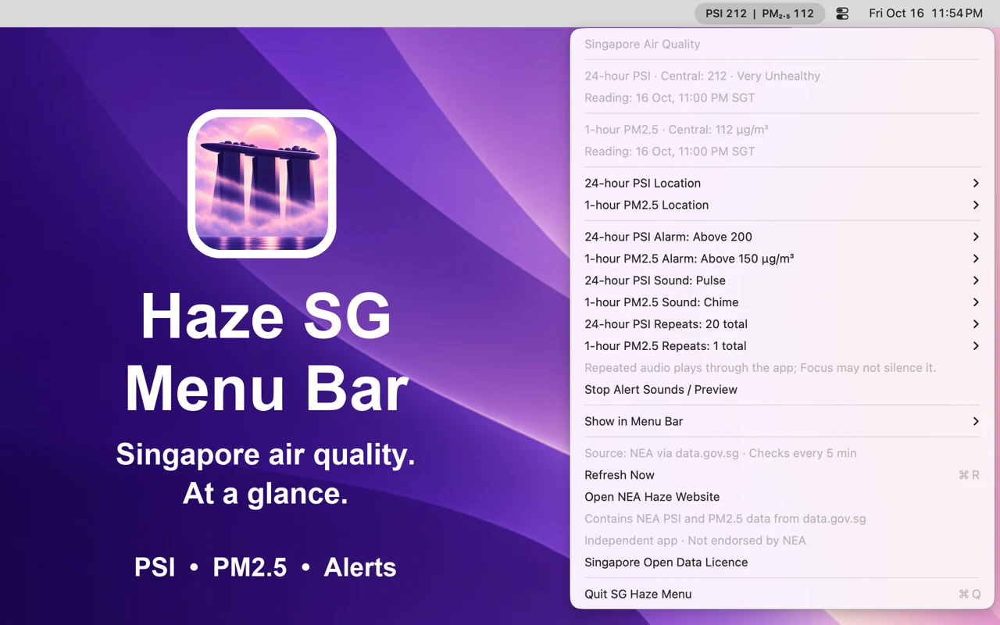

Two readings. Your region.
See PSI, PM2.5, or both. Choose Central, North, South, East, or West separately for each reading.
MADE FOR MAC · SINGAPORE AIR QUALITY
Haze SG Menu Bar puts 24-hour PSI and 1-hour PM2.5 readings in your menu bar, with alerts you control.
One-time purchase. No ads, subscriptions, or in-app purchases.
Get support
See PSI, PM2.5, or both. Choose Central, North, South, East, or West separately for each reading.
Set independent thresholds, choose a sound or your own audio file, and adjust sound repeats.
Enable Open at Login to resume monitoring when you sign in. New readings are checked every five minutes.
SUPPORT
Email strikespark.feedback@gmail.com for help, bug reports, or suggestions. Include your macOS version, app version, and the steps that led to the issue. Please leave personal information out of screenshots.
Enable Open at Login in the app’s menu. If approval is required, follow the link to System Settings → General → Login Items. You can disable automatic startup at any time.
The app checks every five minutes, but new values depend on the source’s published updates. Check the reading timestamp and use Refresh Now. An internet connection is needed. A stale reading or update error is shown in the menu.
Keep the app running and check that its notifications are allowed in System Settings → Notifications. The selected region’s fresh reading must be strictly above your threshold. A threshold alarm normally alerts once while the reading remains above the limit; explicitly setting the threshold rearms it. Focus and notification settings can affect presentation.
Choose separate sounds and repeat counts for PSI and PM2.5. You can import an audio file or select Silent. Stop Alert Sounds / Preview stops current playback. Repeated audio is played by the app and may not be silenced by Focus.
The app is a one-time paid download through the Mac App Store. There are no subscriptions, ads, or in-app purchases. Apple handles payment and purchase records. Re-download using the Apple Account used for purchase. For refunds, visit Apple’s purchase support.
No. Haze SG Menu Bar is an independent app by Breezy Star. It uses NEA data supplied through data.gov.sg under the Singapore Open Data Licence. It is not affiliated with or endorsed by NEA. Visit haze.gov.sg for official haze information. PSI and PM2.5 are different measurements, and regional readings are not measurements at your exact location.